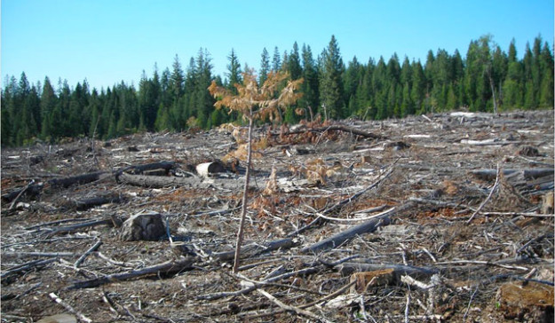
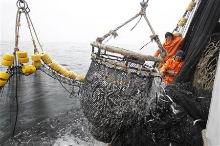

Human Activity!
Human activity has greatly affected the Pacific Maritime ecozone. There are over 2.5 million people are living in the Pacific Maritime ecozone and the population has increased greatly due to immigration. Rapid urbanization is also affecting the ecozone, making it hard to protect the wildlife habitats and agricultural land. Industries are a major human activity and there are 3 main industries in the Pacific Maritime ecozone, forestry, farming, and fishing.

Forestry includes logging and other forestry related industries like paper. Logging is when trees are cut down and sold as timber or pulp and this has impacted the landscape greatly, but many people do depend on this industry for the jobs it provides. 120 years ago over 2 million hectares of coastal rain forests were clear-cut.

The second industry fishing, is very important to coastal communities for they are near the Pacific ocean and supplied with lots of fish. The Pacific Maritime not only includes that Pacific ocean, but inlets, rivers, and lakes as well where people can fish, but now some of these areas are now used for boat tours and transportation. In these bodies of water include many different species of fish that can be found in the Pacific Maritime.

The third main industry is farming. Farming is also very popular since the Pacific Maritime contains Podzolic soil, which is soil that contains lots of humus and minerals that helps with plant growth. Not only does the Pacific Maritime contain Podzolic soil, but it also receives lots of precipitation and has 200-260 days for the growing season.